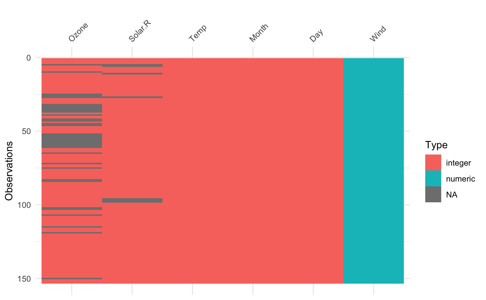

vis_dat gives you an at-a-glance ggplot object of what is inside a
dataframe. Cells are coloured according to what class they are and whether
the values are missing. As vis_dat returns a ggplot object, it is very
easy to customize and change labels, and customize the plot
vis_dat(x, sort_type = TRUE, palette = "default", warn_large_data = TRUE, large_data_size = 9e+05)
Arguments
| x | a data.frame object |
|---|---|
| sort_type | logical TRUE/FALSE. When TRUE (default), it sorts by the type in the column to make it easier to see what is in the data |
| palette | character "default", "qual" or "cb_safe". "default" (the default) provides the stock ggplot scale for separating the colours. "qual" uses an experimental qualitative colour scheme for providing distinct colours for each Type. "cb_safe" is a set of colours that are appropriate for those with colourblindness. "qual" and "cb_safe" are drawn from http://colorbrewer2.org/. |
| warn_large_data | logical - warn if there is large data? Default is TRUE see note for more details |
| large_data_size | integer default is 900000 (given by `nrow(data.frame) * ncol(data.frame)``). This can be changed. See note for more details. |
Value
ggplot2 object displaying the type of values in the data frame and
the position of any missing values.
Note
Some datasets might be too large to plot, sometimes creating a blank plot - if this happens, I would recommend downsampling the data, either looking at the first 1,000 rows or by taking a random sample. This means that you won't get the same "look" at the data, but it is better than a blank plot! See example code for suggestions on doing this.
See also
Examples
vis_dat(airquality)# NOT RUN { # experimental colourblind safe palette vis_dat(airquality, palette = "cb_safe") vis_dat(airquality, palette = "qual") # if you have a large dataset, you might want to try downsampling: library(nycflight13) library(dplyr) flights %>% sample_n(1000) %>% vis_dat() flights %>% slice(1:1000) %>% vis_dat() # }